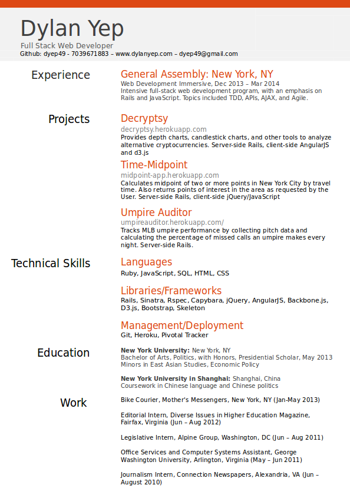

After graduating from NYU with a degree in Politics and minors in Economic Policy and Chinese, I was dissatisfied with a future in politics. I needed a career change before my career even started. After spending time self-studying coding, I enrolled in General Assembly's Web Development Immersive program. Now, I'm a full-stack web developer.
Portfolio Under Construction!

About Me

Portfolio
- My Github
-
Umpire Auditor Umpire Auditor (Github)
Tracks MLB umpire performance by calculating the percentage of missed calls an umpire makes every night
-
Midpoint Midpoint (Github)
Calculates midpoint of two or more points in New York City, by travel time, not distance. Also returns points of interest in the area
-
Decrtypsy Decryptsy(Github)
Provides depth charts, candlestick charts, and other tools to analyze alternative cryptocurrencies
Resume
Contact Me
- Email: dyep49@gmail.com
- LinkedIn: https://www.linkedin.com/in/dylanyep
test4
test5